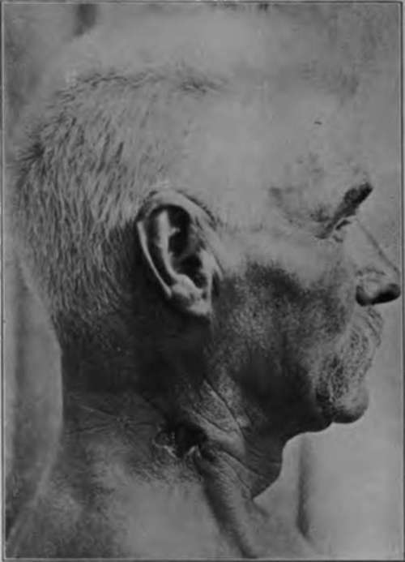
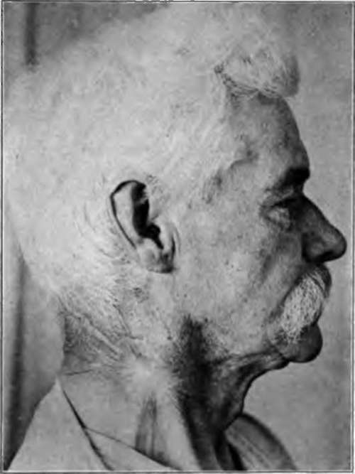

Actinic Treatment. Part 2
Description
This section is from the book "Skin Cancer", by Henry H. Hazen, A.B., M.D.. Also available from Amazon: Skin Cancer.
Actinic Treatment. Part 2
"As apparatus and technic improved so that the number of exposures in a given case was reduced, the unfavorable results and the recidives were' correspondingly diminished numerically. In other words, the nearer the treatment had approached the massive dose method, the better have been the results. The application of small amounts of the x-ray to the skin for a long period of time will produce atrophy, telangiectasia, pigmentation with or without erythema, and, finally, epithelioma-i. e., a condition similar to xeroderma pigmentosum. It might be mentioned here that these features are far less likely to occur if a well-filtered ray is employed. They will develop, however, even with the filtered ray, if the applications are repeated often enough and are continued over a sufficiently long period of time. Is it not possible, therefore, that so much ray applied to an epithelioma might add to its malignancy?
"It has been proved absolutely that prolonged and excessive exposure to the x-ray can produce a cancer. It would seem advisable, therefore, in the treatment of epithelioma with the x-ray to give as nearly as possible the exact or minimal amount necessary to cure the individual case. This dose may be divided into several strong treatments, but not into unlimited and oft-repeated mild exposures".
MacKee and Remer admit that their results are no better than those of Pusey, who sticks to the fractional method of dosage, but they do claim that Pusey 's results arc far above the average because he is expert, and that their own results are much improved by the introduction of the newer method. Their technic, to quote their own words, is as follows:
"For the information of the reader who has had no personal experience with radiotherapy, it may be stated that there are the direct and indirect methods of qualitative and quantitative measurements. The indirect method consists of judging the quality of the ray by certain fixed standards, the technic being closely associated with the personal equation, because hardly any two radiologists employ exactly the same type of apparatus. Briefly, the technic is as follows: A milliamperemeter is employed to ascertain the amount of current passing through the tube, the milliamperage employed being the same in every treatment. The anode of the x-ray tube is always placed at a given number of inches from the skin. The parallel spark gap (or other instrument), which registers the resistance in the circuit, is adjusted at a certain distance. By working with these constants, having had a great deal of experience, being thoroughly acquainted with all parts of the various apparatus employed at the moment, and, above all, possessing a knowledge of all possible sources of error, one is enabled to estimate the penetration (quality) and the amount of ray administered. The accuracy of this technic, while being sufficient for repeated small doses, does not possess the exacting requirements of the massive dose method. This view may have to be modified in the future, but, with the exciting apparatus and tubes available at present, we do not consider that our position is too skeptical.
Fig. 69.-Basal-cell epithelioma. Twelve years ago this patient had numerous ulcerating gummata, one of which was at the site of the present lesion. Anti-syphilitic treatment healed all lesions excepting one upon the neck, which never at any time entirely healed. Ulcer has progressed considerably In past two years and has developed a very hard border. Histopathology is that of a deep-seated basal-cell epithelioma. (MacKee's collection).
Fig. 70.-As a result of one massive dose of x-ray application, consisting of H 8. B 10, the lesion healed. Eight weeks later a second application of the same quantity and quality was administered as a prophylactic. A piece of the scar was removed for histological study and no evidence of malignancy could be detected. (MacKee's collection).
"The direct method of measurement consists of utilizing many of the factors of the indirect technic, with the addition of employing instruments designed for the purpose of directly estimating the quality and quantity of the ray. There have been many types of apparatus and many schemes advanced with this object in view. There are, for instance, the Holzknecht chromoradiometer and radiometer, the Sabouraud-Xoire radiometer, the Bordier chromoradiometer, the Bordier-Galimard units, the Guilleminot fluorometric quantiometer, the Kienbock photographic quantiometer, the Schwarz precipitation radiometer, the Hampson radiometer, and many devices and schemes originated by Freund, Schmidt, Haenisch, and others for the estimation of the quantity of the ray administered. Without going into detail, we believe that the Holzknecht radiometer (not the chromoradiometer). employed with a modified technic, is the best procedure to follow for the purpose. In our hands this technic has proved eminently satisfactory, and, although not theoretically accurate or 'fool proof,' the possibility of error, in the hands of the experienced operator, is reduced to the minimum.
"This idea of estimating the quantity of the ray is based on the change in color of a tablet of platinocyanide of barium which has been exposed to the x-ray. A standard color scale is utilized for comparison. The color changes are estimated in Holzknecht (H) units. The unit 1 H is one-third of that quantity of ray which can induce a mild erythema on the face in an adult. The dose varies with the age of the individual and the part of the body exposed. Skin that has been exposed to irritating chemicals will respond more quickly than normal skin. Fair skin is slightly more susceptible than dark skin. Beyond these variations it is a very rare thing to see an example of hypersusceptibility.
Continue to:
Tags
bookdome.com, books, online, free, old, antique, new, read, browse, download